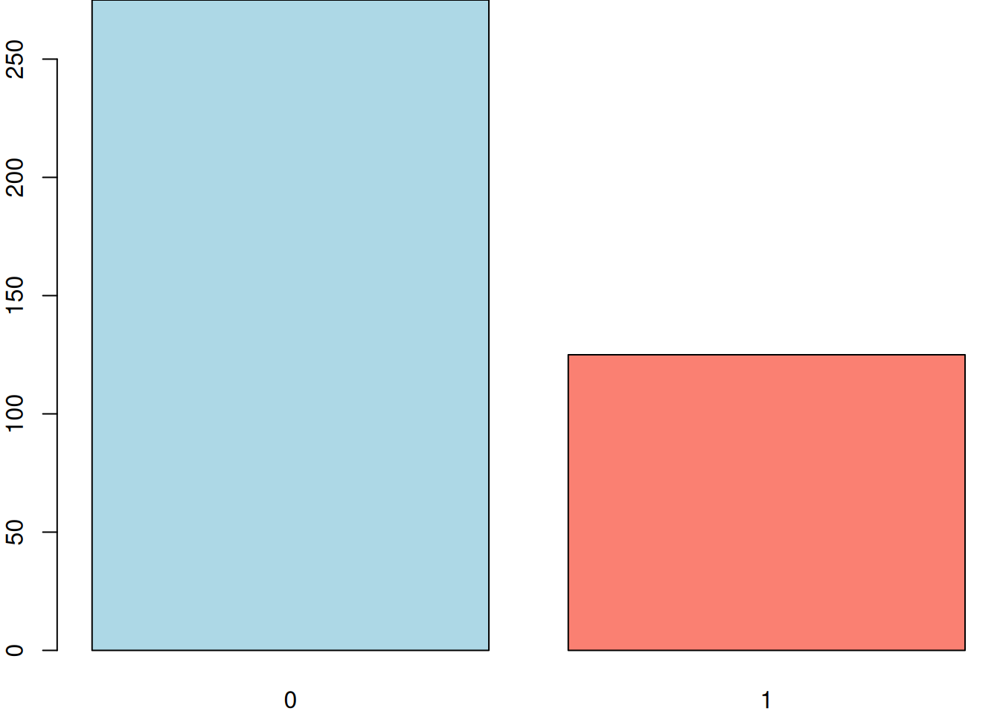
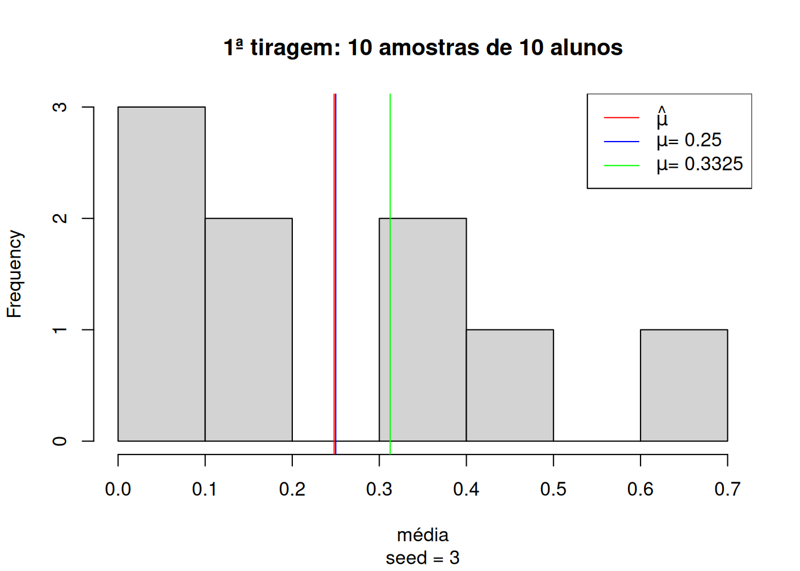
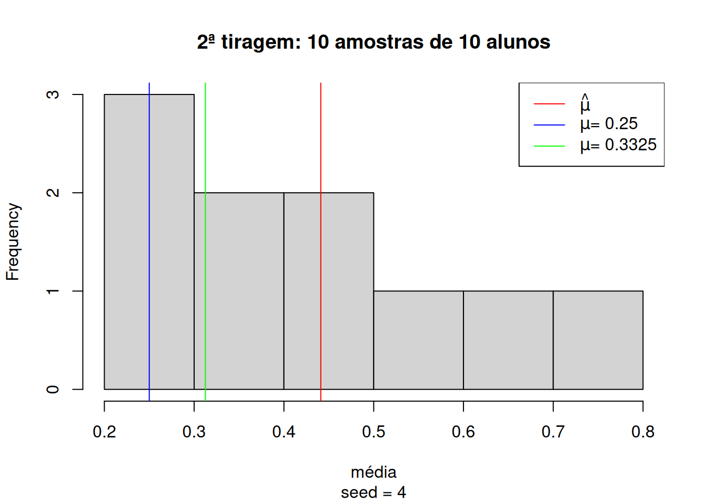

No post anterior, falei sobre o teste t para duas amostras independentes. Coincidentemente, no dia seguinte apareceu essa dúvida no fórum de matemática do qual sou contribuidor. Não podemos perder essa oportunidade, não é mesmo?
1 O PROBLEMA
Considere uma questão de múltipla escolha com quatro respostas possíveis. A pergunta foi formulada para ser muito difícil, sendo que nenhuma das quatro respostas são consideradas erradas, mas com apenas uma única resposta correta. Foi feito um teste com 400 alunos. O teste tem objetivo de verificar se mais pessoas respondem à pergunta corretamente do que seria esperado apenas devido ao acaso (ou seja, se todos adivinhassem por pura sorte a resposta correta).
Realize o teste de hipóteses (seguindo os 5 passos), sabendo-se que de 400 alunos, 125 responderam corretamente a questão. Use α = 2%.
Acredito que o maior desafio aqui para os alunos iniciantes seja entender o problema e estruturá-lo de uma forma que possa ser respondido com assertividade. A chave está no seguinte trecho:
do que seria esperado apenas devido ao acaso (ou seja, se todos adivinhassem por pura sorte a resposta correta).
A probabilidade de se escolher a resposta certa dentre 4 opções ao acaso é de 25%. Entretanto, 125 dos 400 alunos acertaram a questão, ou seja, 31.25%. O problema então consiste em inferir se a média de 31.25% é significantemente diferente da média esperada, 25%, dado o tamanho da amostra e sua variância. Isso pode ser alcançado com o teste t para uma amostra.
2 UM POUCO DE SIMULAÇÃO
Antes de entrarmos no teste em si, sabemos que ele é bem simples de calcular mas nem sempre seu conceito é tão facilmente assimilado. Para auxiliar, vamos simular os dados e tentar colocar de maneira visual o que vamos fazer.
Como são dados binários (acertos ou erros) vamos utilizar 1 para acertos e 0 para erros.
# criando amostradata =c(rep(1, 125), rep(0, 275))# para que você chegue nos mesmos números aleatórios do exemploset.seed(1)# randomizandodata =sample(data)# checandodata
Agora que já temos nosso vetor com os dados aleatórios dos alunos que acertaram e erraram as questões, vamos visualizá-lo:
# gráfico de barraspar(mar =c(2, 2, 0, 0))barplot(table(data), col =c("lightblue", "salmon"))

A intuição do teste t é dizer se essa diferença entre os acertos e erros ocorre por mero acaso no processo de amostragem ou não. Mas o que isso significa? Neste caso, a média amostral foi de 31.25% com 400 estudantes. As características da distribuição, o desvio padrão e o tamanho da amostra permitem atestar que a diferença entre a média amostral e a média esperada é significante?
Para ilustrar o raciocínio, vamos tomar 10 amostras de 10 estudantes aleatoriamente e observar o comportamento das médias. Essas amostras de 10 estudantes podem ter média de acertos (linha vermelha) muito próxima dos 25% esperados (linha azul) e longe da média dos 400 alunos (linha verde).
# garantir reprodutibilidadeset.seed(3)# quantidade de amostrasn =10# médiasmedias =rep(NA, n)# tirando amostras e calculando as médiasfor (i in1:n) { medias[i] =mean(sample(data, size =runif(1, min =0, max =10), replace =TRUE))}# visualizaçãohist(medias,main ="1ª tiragem: 10 amostras de 10 alunos",xlab ="média",sub ="seed = 3")abline(v =mean(medias, na.rm =TRUE), col ="red")abline(v =0.25, col ="blue")abline(v =0.3125, col ="green")legend("topright", legend =c(expression(hat(mu)),expression(paste(mu, "= 0.25")),expression(paste(mu, "= 0.3325"))),col =c("red", "blue", "green"),lty =1)

Mas também é possível realizar outra tiragem de 10 amostras com 10 alunos diferentes e encontrarmos uma média completamente diferente, próxima dos 45%:
# garantir reprodutibilidadeset.seed(4)# quantidade de amostrasn =10# médiasmedias =rep(NA, n)# tirando amostras e calculando as médiasfor (i in1:n) { medias[i] =mean(sample(data, size =runif(1, min =0, max =10), replace =TRUE))}# visualizaçãohist(medias,main ="2ª tiragem: 10 amostras de 10 alunos",xlab ="média",sub ="seed = 4")abline(v =mean(medias, na.rm =TRUE), col ="red")abline(v =0.25, col ="blue")abline(v =0.3125, col ="green")legend("topright", legend =c(expression(hat(mu)),expression(paste(mu, "= 0.25")),expression(paste(mu, "= 0.3325"))),col =c("red", "blue", "green"),lty =1)

Conforme vamos aumentando a quantidade de amostras, o desvio padrão se estabiliza e a média amostral vai se aproximando da média populacional. Veja as médias de 50 amostras de 10 alunos, cada:
# garantir reprodutibilidadeset.seed(3)# quantidade de amostrasn =50# médiasmedias =rep(NA, n)# tirando amostras e calculando as médiasfor (i in1:n) { medias[i] =mean(sample(data, size =runif(1, min =0, max =10), replace =TRUE))}# separando o grid em 2 colunaspar(mfrow =c(1, 2))# visualização 1ª tiragemhist(medias,main ="1ª tiragem: 50 amostras de 10 alunos",xlab ="média",sub ="seed = 3")abline(v =mean(medias, na.rm =TRUE), col ="red")abline(v =0.25, col ="blue")abline(v =0.3125, col ="green")################################################################################# garantir reprodutibilidadeset.seed(4)# quantidade de amostrasn =50# médiasmedias =rep(NA, n)# tirando amostras e calculando as médiasfor (i in1:n) { medias[i] =mean(sample(data, size =runif(1, min =0, max = n), replace =TRUE))}# visualização 2ª tiragemhist(medias,main ="2ª tiragem: 50 amostras de 10 alunos",xlab ="média",sub ="seed = 4")abline(v =mean(medias, na.rm =TRUE), col ="red")abline(v =0.25, col ="blue")abline(v =0.3125, col ="green")legend("topright", legend =c(expression(hat(mu)),expression(paste(mu, "= 0.25")),expression(paste(mu, "= 0.3325"))),col =c("red", "blue", "green"),lty =1,cex = .7)
Pode-se observar que tomando duas tiragens de 50 amostras de 10 alunos aleatoriamente cada, as médias começam a convergir para a média observada no total dos 400 alunos.
E se aumentarmos para 100 amostras de 10 alunos?
# garantir reprodutibilidadeset.seed(3)# quantidade de amostrasn =100# médiasmedias =rep(NA, n)# tirando amostras e calculando as médiasfor (i in1:n) { medias[i] =mean(sample(data, size =runif(1, min =0, max =10), replace =TRUE))}# separando o grid em 2 colunaspar(mfrow =c(1, 2))# visualização 1ª tiragemhist(medias,main ="1ª tiragem: 100 amostras de 10 alunos",xlab ="média",sub ="seed = 3")abline(v =mean(medias, na.rm =TRUE), col ="red")abline(v =0.25, col ="blue")abline(v =0.3125, col ="green")################################################################################# garantir reprodutibilidadeset.seed(4)# médiasmedias =rep(NA, n)# tirando amostras e calculando as médiasfor (i in1:n) { medias[i] =mean(sample(data, size =runif(1, min =0, max =10), replace =TRUE))}# visualização 2ª tiragemhist(medias,main ="2ª tiragem: 100 amostras de 10 alunos",xlab ="média",sub ="seed = 4")abline(v =mean(medias, na.rm =TRUE), col ="red")abline(v =0.25, col ="blue")abline(v =0.3125, col ="green")legend("topright", legend =c(expression(hat(mu)),expression(paste(mu, "= 0.25")),expression(paste(mu, "= 0.3325"))),col =c("red", "blue", "green"),lty =1,cex = .7)
Perceba que com 100 amostras aleatórias, as médias já ficam muito próximas dos 33.25% observados em ambas tiragens. Isso acontece porque conforme o número de observações aumenta, o desvio padrão tende a se estabilizar e a incerteza diminui. Seria muito difícil de os primeiros 4001 alunos terem uma determinada média de acertos e os próximos 50 alunos todos acertassem ou errassem de forma a gerar mudanças no desvio padrão e afetar a média significativamente. É por isso que, em último caso, o teste t é um teste de tamanho de amostra. A pergunta por trás de tudo é: minha amostra é grande o suficiente para que a diferença seja significativa?
Agora, com a intuição do teste em mente, vamos formalizá-lo.
3 O TESTE
Para tornar o processo bem transparente e fixar bem os conceitos, é sempre recomendável utilizar o framework das 5 etapas do teste de hipótese, que são:
A hipótese nula é que não se pode afirmar que a média de acerto observada é significativamente diferente da média esperada. Já a hipótese alternativa é que elas são significativamente distintas.
3.2 Declarar o nível de significância
\[\alpha = 0.02\] O \(\alpha = 0.02\) é o que dá sentido ao termo significantemente diferente. É a probabilidade de se cometer o erro do tipo II, ou seja, rejeitar a hipótese nula quando não deveria ser rejeitada. Quanto menor o \(\alpha\), maior deverá ser a diferença entre as médias para que ela seja considerada significante.
3.3 Calcular a estatística do teste
\[z = \frac{\bar{x} - \mu_0}{\frac{\sigma}{\sqrt{n}}}\] Note que: \[\lim_{n \to \infty}z(n) = \infty\] Podemos rejeitar a hipótese nula se \(z\) crítico for maior que o \(z\) tabelado. Conforme \(n\) aumenta, eventualmente a diferença será significativa, demonstrando matematicamente o que verificamos intuitivamente.
Como o valor de 2.693 excede o valor de \(z\) a 98% de significância (2.33), pode-se rejeitar a hipótese nula. A diferença é significativa e não pode ser atribuída ao acaso de amostragem.
4 Ok, mas e no R?
No R, o teste não poderia ser mais simples:
t.test(data, mu =0.25, conf.level =0.98)
One Sample t-test
data: data
t = 2.6934, df = 399, p-value = 0.00737
alternative hypothesis: true mean is not equal to 0.25
98 percent confidence interval:
0.2583002 0.3666998
sample estimates:
mean of x
0.3125
Note que 0.25 não está no intervalo de confiança, de forma que podemos rejeitar \(H_o\). Como ilustração, para que não pudessemos rejeitar a hipótese nula, teríamos de aumentar o nível de significância para 1 - p-valor, ou seja, para 99.263%:
t.test(data, mu =0.25, conf.level =0.99263)
One Sample t-test
data: data
t = 2.6934, df = 399, p-value = 0.00737
alternative hypothesis: true mean is not equal to 0.25
99.263 percent confidence interval:
0.2499995 0.3750005
sample estimates:
mean of x
0.3125
Ou aumentar a média para 25.83%:
t.test(data, mu =0.2583, conf.level =0.98)
One Sample t-test
data: data
t = 2.3357, df = 399, p-value = 0.02
alternative hypothesis: true mean is not equal to 0.2583
98 percent confidence interval:
0.2583002 0.3666998
sample estimates:
mean of x
0.3125
Bem mais fácil do que fazer na mão, não é mesmo?
5 CONCLUSÃO
Agora que temos todo o instrumental, podemos responder a pergunta do rapaz do fórum. O professor, sim, pode ficar orgulhoso, pois podemos rejeitar a hipótese de que a média de acerto de seus alunos foi mero chute. Parabéns à turma! :p
Notas de rodapé
Ou mil, 10 mil, 100 mil… Quanto maior for \(n\), mais difícil será causar mudanças no desvio padrão, de forma que a incerteza é cada vez menor.↩︎